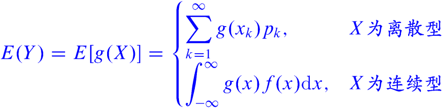
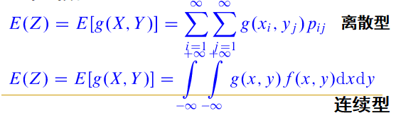
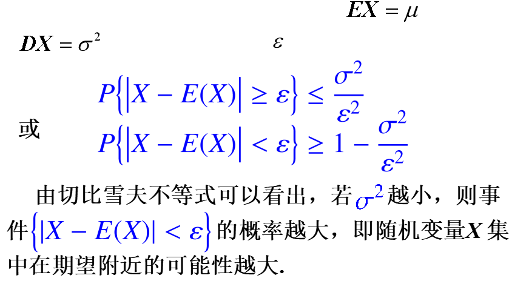
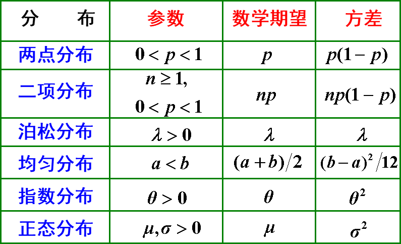
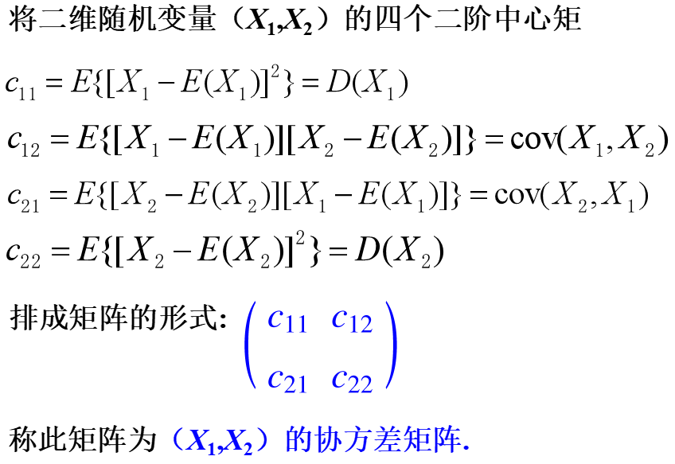
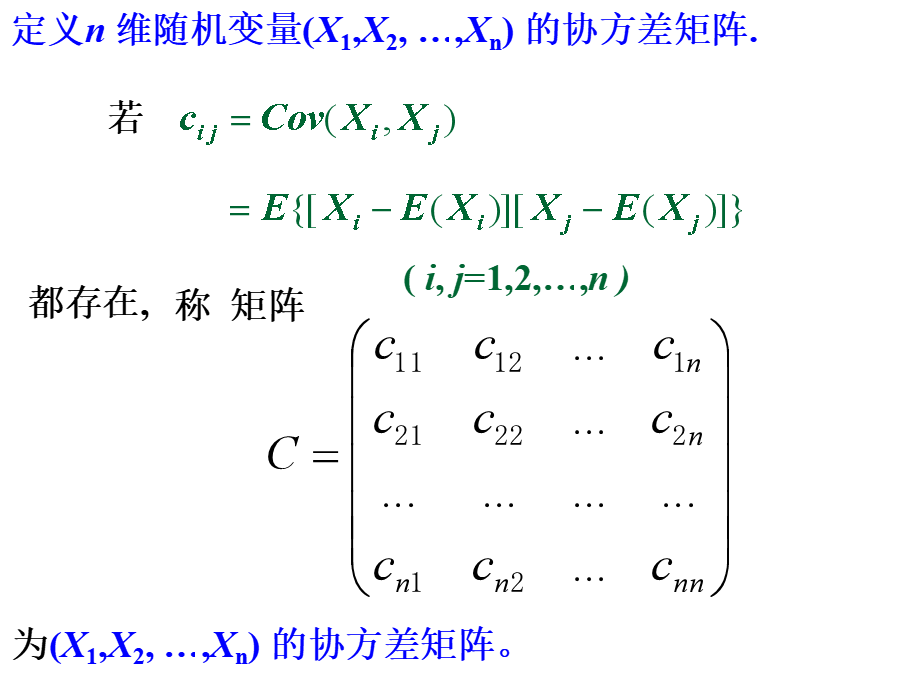

1 数学期望
1.1 随机变量的数学期望概念
定义1：设X是离散型随机变量，它的分布律是：P(X=xk)=pk,k=1,2,…，若级数∑k=1∞xkpk绝对收敛，则称级数∑k=1∞xkpk的和为随机变量X的数学期望。
E(X)=k=1∑∞xkpk
定义2：设连续型随机变量X的概率密度为f(x)，如果积分∫−∞+∞xf(x)dx绝对收敛，则称该积分的值为随机变量X的数学期望或者均值，记为E(X)，即
E(X)=∫−∞+∞xf(x)dx
1.2 随机变量函数的数学期望
定理1：设Y是随机变量X的函数Y=g(X)（ g 是连续函数）：
- 当X为离散型时, 它的分布律为P(X=xk)=pk,(k=1,2,…)，若级数∑k=1∞g(xk)pk绝对收敛，则有：
E(Y)=E[g(X)]=k=1∑∞g(xk)pk
- 当X为连续型时, 它的密度函数为f(x)，若∫−∞+∞g(x)f(x)dx绝对收敛，则有：
E(Y)=E[g(X)]=∫−∞+∞g(x)f(x)dx
总结如下：

定理2：设Z=g(X,Y) 是随机变量X、Y的函数，
(1) 如果X、Y是离散型随机变量，联合概率分布为pij , i,j=1,2, …，则
E(Z)=E[g(X,Y)]=i=1∑∞j=1∑∞g(xi,yj)pij
(2) 如果X、Y是连续型随机变量，联合概率密度为f(x,y)，则
E(Z)=E[g(X,Y)]=∫−∞+∞∫−∞+∞g(x,y)f(x,y)dx dy
1.3 数学期望的性质
- 设C是常数，则E©=C;
- 若k是常数，则E(kX)=kE(X);
- E(X+Y) = E(X)+E(Y)，推广E[∑i=1nXi]=∑i=1nE(Xi)
- 设X、Y 相互独立，则 E(XY)=E(X)E(Y)，推广E[∏i=1nXi]=∏i=1nE(Xi) ，诸 Xi相互独立时。
请注意：由E(XY)=E(X)E(Y)不一定能推出X,Y 独立。
1.4 小结
一维随机变量的数学期望：
- 离散型：E(X)=∑k=1∞xkpk
- 连续型：E(X)=∫−∞+∞xf(x)dx
随机变量函数的数学期望：

2 方差
2.1 方差的定义
方差是一个常用来体现随机变量取值分散程度的量。

D(X)=Var(X)=E{[X−E(X)]2}.
称D(X)为标准差或均方差，记为σ(X)。
2.2 方差的计算
2.2.1 利用定义计算
离散型：D(X)=∑k=1+∞[xk−E(X)]2pk,其中P{X=xk}=pk,k=1,2,⋯,是X的分布律。
连续性：D(X)=∫−∞+∞[x−E(X)]2f(x)dx，其中f(x)为x的概率密度。
2.2.2 利用公式计算
D(X)=E(X2)−[E(X)]2.
2.3 方差的性质
（1）设 C 是常数, 则有D(C)=0
（2）设 X 是一个随机变量, C 是常数, 则有D(CX)=C2D(X)
（3）设 X, Y 相互独立, D(X), D(Y) 存在, 则D(X±Y)=D(X)+D(Y).D(X±C)=D(X).
（4） D(X)=0的充要条件是X以概率1取常数E(X)，即P{X=E(X)}=1
2.4 切比雪夫不等式

2.5 常见分布的期望与方差

3 协方差及相关系数
3.1 协方差
定义： 量E{[X−E(X)][Y−E(Y)]}称为随机变量X和Y的协方差，记为Cov(X,Y)，即Cov(X,Y)=E{[X−E(X)][Y−E(Y)]}。
计算协方差的一个简单公式：Cov(X,Y)=E(XY)−E(X)E(Y)
3.1.1 性质
- Cov(X,C)=0,C为常数
- Cov(X,X)=D(X)
- Cov(X,Y)=Cov(Y,X)
- Cov(X1+X2,Y)=Cov(X1,Y)+Cov(X2,Y)
- Cov(aX,bY)=abCov(X,Y)a,b是常数
- Cov(aX+b,Y)=aCov(X,Y)a,b是常数
- D(X±Y)=D(X)+D(Y)±2Cov(X,Y)
- 若X与Y独立，则Cov(X,Y)=0
3.2 相关系数
定义：设D(X)>0,D(Y)>0，称ρXY=D(X)D(Y)Cov(X,Y)为随机变量X和Y的相关系数，ρXY简记为ρ。
3.2.1 性质
- ∣ρ∣≤1
- ∣ρXY∣=1⇔P{Y=a+bX}=1
- X和Y独立时,ρ=0,但其逆不真
- 若ρXY=0，称X和Y不相关
定理：若随机变量X与Y的方差都存在，且均不为零；则下列四个命题等价。
- ρXY=0
- cov(X,Y)=0
- E(XY)=E(X)E(Y)
- D(X±Y)=D(X)+D(Y)
独立与不相关并不是等价的.，只有当(X,Y)服从二维正态分布时，则X与Y独立⟷X与Y不相关。
3.3 相关性和独立性的联系
相关性：线性相关的程度，不相关说明没有线性关系，但是并不代表没有其他函数关系
4 矩、协方差矩阵
4.1 原点矩、中心矩
定义：设X和Y是随机变量，若E(Xk),k=1,2,⋯存在，称它为X的k阶原点矩，简称k阶矩。
若E{[X−E(X)]k},k=2,3,⋯存在，称它为X的k阶中心距。
均值E(X)是X一阶原点矩，方差D(X)是X的二阶中心矩。
设 X 和 Y 是随机变量，若E(XkYl),k,l=1,2,⋯存在，称它为X 和 Y 的 k+l 阶混合（原点）矩.
若E{[X−E(X)]k[Y−E(Y)]l}存在，称它为X和Y的k+l阶混合中心矩。
协方差Cov(X,Y)是X和Y的二阶混合中心矩。
4.2 协方差矩阵



 微信
微信 支付宝
支付宝